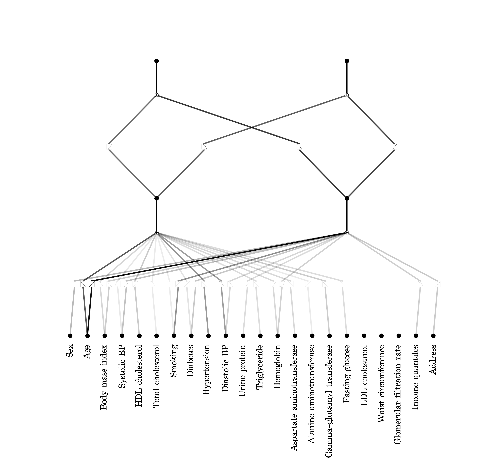

BIOGRAPHY
I am a research scientist in the AI team at the Cardiovascular Center of Seoul National University Bundang Hospital, working under a contractual agreement with medical doctor Si-Hyuk Kang.
I earned my M.S. from the Advanced Application for Intelligence Systems Laboratory, where I studied deep learning theory and explored novel learning approaches under the guidance of Professor Young-kyun Noh.
My thesis proposes novel learning methods for handling censored data in survival analysis, along with a new objective function designed to directly optimize classification metrics in particle physics.
I am interested fundamentally in the theoretical issues in machine learning for large-scale data analysis. Currently, I focus on machine learning methods for practical applications in clinical settings.
CONFERENCES & PUBLICATIONS
-
Moon, I.T.*, Ko, SK.*, Kang, SH. et al. (2024). Augmented Reality in Cardiology: Enhancing Visualization and Precision. Current Cardiovascular Risk Reports . (* contributed equally to this work.)
[Paper]
-
Sang-Kyun Ko and Yung-Kyun Noh, (2023), Data Reconstruction Method for Learning to Censored
Survival Data, Korean Artificial Intelligence Association Summer Conference, 2023 , Poster-Presentation.
[Program book] ,
[Paper],
[Poster].
- Oh, M. J., Park, J., Jeon, J., Ko, S. K. , Jo, S., Kang, S., Kim, S. H., Park, S. H., Chang, Y. H., Shin, C. M., Kang, S. J., Kim, S. G., & Cho, S. J. (2023). Application of artificial intelligence in the detection of Borrmann type 4 advanced gastric cancer in upper endoscopy. United European Gastroenterology Journal, 11(Supplement 8), pp0253, p666. , Abstract Poster,
[Abstract]
-
Jang, C., Ko, SK., Choi, J., Lim, J., Noh, Y. K., and Kim, T. J. (2022). Learning to increase matching efficiency in identifying additional b-jets in the \( t \bar{t} b \bar{b} \) process. The European Physical Journal Plus,137(7), 1-12.
[Paper]
-
Park, K., Hong, B., Ko, S., and Kim, B. (2018). Design and Implementation of Real-Time Web Authoring Tool Based on Drag-and-Drop Method. In Advances in Computer Science and Ubiquitous Computing (pp.539-543). Springer, Singapore.
-
Ko, S. , Kim, B., and Kim, J. D., (2018), Deep Learning based Algorithm for Object Identification in Multimedia, The 13th KIPS International Conference on Ubiquitous Information Technologies and Applications (CUTE 2018) , Oral Presentation.
[Program book]
-
Hyeontae Seo, Boseon Hong, Sang-Kyun Ko, Kichoel Park, Bongjae Kim, and Hyedong Jung (2017). A survey on the performance of Deep Learning based on multiple GPUs. Proceedings of the Korean Institute of Information Scientists and Engineers Conference, 1714-1716.
PROJECTS
(Manuscript in Preparation) Atherosclerotic Cardiovascular Disease Risk Prediction in Koreans using Kolmogorov-Arnold Network
한글테스트

(In Progress) Video Frame Interpolation for Coronary Angiograms
Description
(Completed) Data Reconstruction Method for Learning to Censored Survival Data
Description
(Completed) Research on Assistive AI in Endoscopy
Description
(Completed) Efficient Learning for Identifying Additional b-Jets in the \( t \bar{t} b \bar{b} \) Process
Description
(Completed) An Object-Based Retrieval System Using YOLO
Description
READS